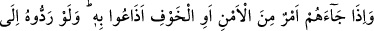

geri döndü. “İçlerinden bir kısmı, senin dediğinden başkasını gizlice kurar. Allah da
onların gizlice kurduklarını yazar.” Yani Allah da onların kendileri aleyhine
değiştirdikleri şeyleri onların aleyhlerine olmak üzere değiştirir. Çünkü “Bir millet
kendi durumunu değiştirmedikçe Allah onların durumunu değiştirmez.” (er-Ra’d,
13/11) “Sen onlara aldırma.” Onları affedip onlara karşı sabırlı ol. “Ve Allah’a
tevekkül et.” Umulur ki Allah onların kalplerini ıslâh eder. Hallerini ve durumlarını
değiştirerek vebal altına girmelerini takdir etmez. Akıbetlerini ve neticelerini
güzelleştirir. Kendisine tevekkül edip sığınanlara “vekil olarak Allah yeter.”
Cenâb-ı Hak, derdi gösterdiği gibi şimdi de şu sözü ile devâyı haber veriyor:
“Kur’ân’ı gereği gibi düşünmüyorlar mı? Âyetin işârî yorumu şöyledir: Eğer kullar
Kur’ân’ı, mucizelerini, hidâyetlerinin nurlarını, âyetlerinin tertîbini, fesâhatinin
kemâlini, belâğatinin güzelliğini, düşünmüş mânâlarının muhkemliğini, cümle
kalıplarının sağlamlığını, sırlarını, hakîkatlerini, işâret ve nüktelerinin inceliğini ve
günahların verdiği zararlardan kalbî hastalıkları çeşitli yollarla tedâvî etmesini tefekkür
etmiş olsalardı, onda her derde devâ, her hastalığa şifâ ve her göze aydınlık bulurlardı.
Onu saf ve berrak, noksanlardan uzak, hayret vericilikleri bitip tükenmeyen bir deniz,
şaşılacak halleri son bulmayan bir kara parçası, kendisinde nefret ve zıtlık olmayan bir
ruh, içinde çelişki ve ihtilaf olmayan bir beden olduğunu görürlerdi. “Eğer o, Allah’tan
başkası tarafından gelmiş olsaydı onda birçok tutarsızlık bulurlardı.” Halbuki onda
küçücük, zerre kadar bir çelişki bile bulamadılar.” Bu işârî tefsiri, “et-Te’vilâtü’n-
Necmiyye”den seçerek aldım.
Mesnevî’de şöyle geçmektedir:
Hakk’ın Kur’ân’ına kaçar, sığınırsan
Peygamberlerin ruhlarına karışırsın
Kur’an’da peygamberlerin ahvâli ve kıssaları vardır
Nebîler, Allah’ın teccellî denizinin balıklarıdır
Eğer sen Kur’an okur, fakat amel etmezsen ne fayda!
Farzet ki peygamberleri, velileri görmüşsün; inanmadıktan sonra ne fayda!
83- Onlara güven veya korkuya dair bir haber gelince hemen onu yayarlar,
halbuki onu, Rasûl’e ve aralarında yetki sâhibi kimselere götürselerdi, onların
arasından işin içyüzünü anlayanlar, onun ne olduğunu bilirlerdi. Allah’ın size lütuf